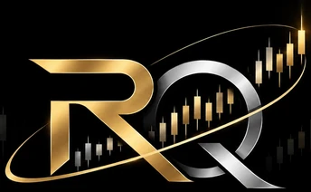
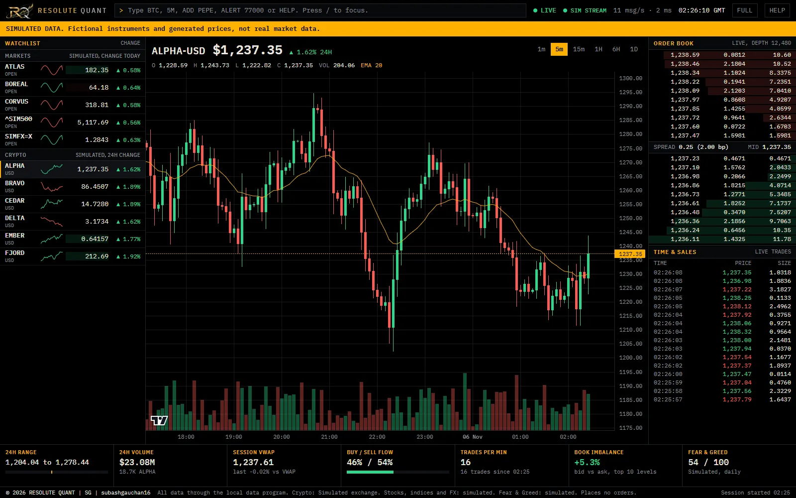
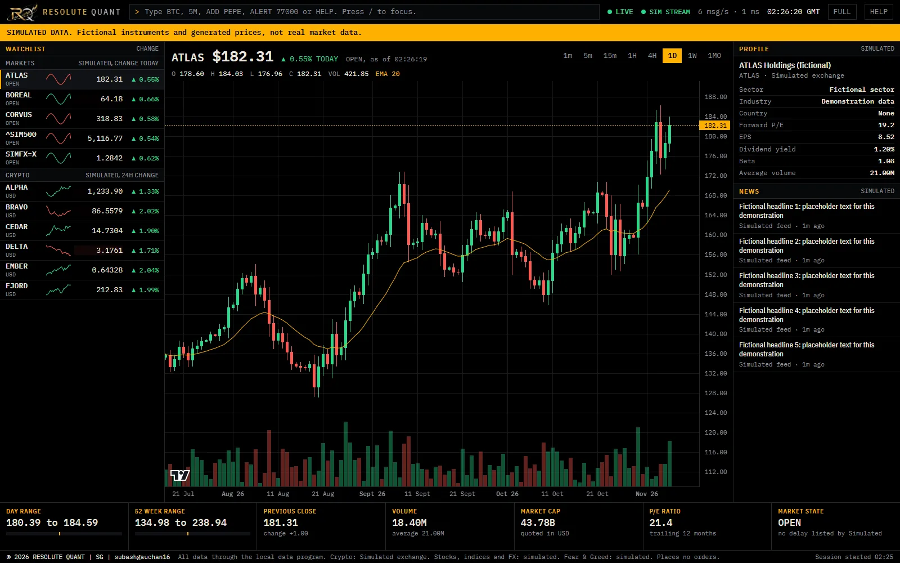
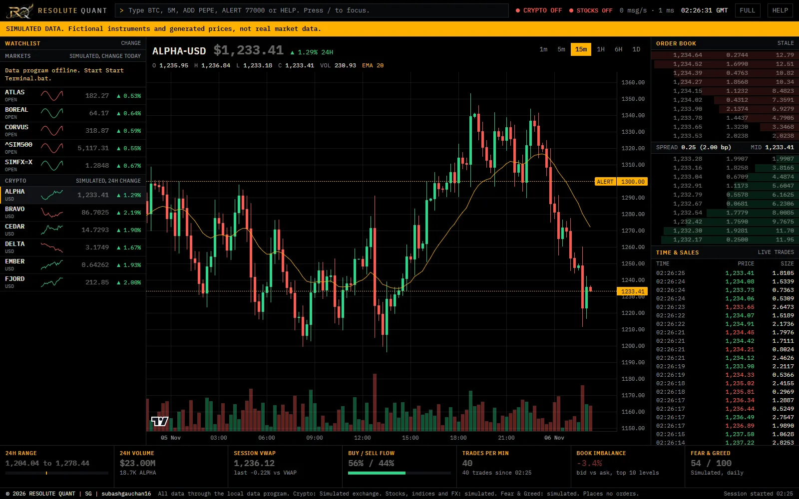

Work in progress · Places no orders
Resolute QuantA market research terminal
A terminal I am building to learn how a dependable market data system works, then how to test forecasts honestly. The terminal runs today. The predictive models and agent bots are the plan, and none of them exist yet.
Work in progress Screenshots use simulated data

At a glance
A working terminal, and research still to come.
It brings crypto, stocks, indices, currencies and gold onto one screen. All market data passes through a local Python backend that validates it, and bad values are dropped and counted, never repaired. These are the latest test results, from 6 November 2026.
01 · What it shows right now
Three views of the real interface

The live monitoring view
This is the main working screen: watch many instruments and study one in depth.
- Watchlist. Each instrument's price, change and small trend line. Select one to open it.
- Price chart. Candles, volume and a 20-period moving average, with buttons for the timeframe.
- Order book. The top ten buy and sell levels, with the spread between them.
- Time and sales. Every trade as it happens: green for buys, red for sells.
- Session statistics. Range, volume, average traded price, buying against selling, and book imbalance.

The company and markets view
Stocks, indices and currencies swap the order book for the context an analyst needs. The company and headlines here are placeholders.
- Timeframes. One minute to one month, offered only where the provider really supplies them. None are invented.
- Company profile. Sector, valuation ratios, dividend yield and beta.
- News. Recent headlines for the open symbol.
- Key statistics. Day and 52-week range, previous close, volume, market cap and P/E.

When the data stops
Old prices that still look live are dangerous, so the terminal says when it has lost its data.
- Status badges. They turn red the moment the backend stops, and recover without a reload.
- Plain instruction. A note says what happened and what to do.
- Dimmed prices. Last known prices stay visible but dim, so they do not read as current.
- Price alert. A saved alert level, drawn on the chart. Alerts fire when the price crosses it.
02 · How forecasts will be judged
The planned test, shown on simulated returns
This runs the evaluation I plan to use on generated data: two simple 24-hour volatility forecasts, scored across twelve time-ordered test periods. Drag to rotate and scroll to zoom.
See the numbers behind this chart
| Simulated period | Error, previous day | Error, smoothed | Forecast volatility % | Outcome volatility % |
|---|
Error is QLIKE, a standard score for volatility forecasts, where lower is better. Generated by this script.
03 · The approach from here
Predictive models and agent bots, in that order
Neither exists yet. This is the plan, and each stage has to pass before the next begins.
Predictive models
Forecasting comes first, because it can be tested without risking anything.
- Start with one modest question: how volatile will Bitcoin be over the next 24 hours?
- Beat simple benchmarks first, then add a transparent statistical model.
- Allow more complex models only if they beat those on data they have never seen.
- Test in time order, with pass marks fixed before any results exist.
- Secure a dataset whose terms allow model research. This is the current blocker.
Agent trading bots
Agents come later, and only on top of a forecast that has passed its tests.
- Agents that watch the data, propose an action with their reasoning, and log every decision.
- Paper trading first: simulated fills on live prices, with no real money.
- Fees, spread and slippage counted in every test, because a gross profit proves little.
- Hard limits on position size and losses, with a stop on stale data and a tested kill switch.
- Real execution only after separate approval, a risk review and monitoring. It is not built.
04 · How it is run
Stage-gate, PDCA and Disciplined Agile
I run this project with the frameworks I learned on my BSc in Applied Management, applied to software. A stage-gate process decides whether the project continues, and with what. Inside each stage the work moves in short PDCA cycles: plan, do, check, act. Disciplined Agile joins the two, keeping the process light where the risk is low, and strict wherever data rights, models or money are involved.
Every iteration is one PDCA cycle
- PPlan. Write the goal and the tests before any code.
- DDo. Build in small steps, on a separate branch.
- CCheck. Run every test, compare the result with the plan, and label the evidence.
- AAct. Keep what worked, or fix it and go round again.
Nine stages, each closed by a gate
After the foundation, two tracks run side by side. Both must pass before paper trading starts. Gates, not dates, decide progress.
Inception
Construction, two tracks in parallel
Transition, once both tracks pass
After the last gate, the project keeps operating and improving in the same PDCA cycles.
What can happen at a gate
- GoOn to the next stage.
- Conditional goOn, with named conditions to close.
- HoldWait for an outside blocker.
- RecycleBack to the stage that caused the fault.
- KillStop, and record why.
- Pass marks are fixed before the work starts, and never changed after the results are seen.
- A fault goes back to the stage that caused it, and every later stage that used it is checked again.
- Procurement is gated too. Nothing is bought, licensed or signed before the gate that needs it, and I approve each item myself.
05 · How it is built
Python at the centre
Python sits at the centre. It's the only code that talks to the data providers, so everything on screen has passed its checks.
- Python
- JavaScript
- C++20
- SQL
- Lightweight Charts
- Qt 6
- SQLite
- Python unit tests
- End-to-end checks in Edge
- Qt tests
- Git and GitHub
- GitHub Pages
- Claude Code
06 · Why this matters to me
Learning finance by building something that has to hold up
I am working towards a career in corporate finance, and I am teaching myself quantitative finance independently. This project is how I connect the two.
The name comes from Resoluters, a clothing brand I started when I was about 16. Resoluter was my own word for someone who is resolute: a person who decides, stays patient and follows through. Resolute Quant carries that attitude into markets.
- It makes the theory practical. Volatility, transaction costs, risk limits and overfitting become problems I have to solve, not only terms I have read about.
- It builds habits finance teams rely on. Validating data, keeping an audit trail and recording what failed all matter as much in a finance function as they do here.
- It trains financial judgement. Asking whether a result survives its costs, and what could make it wrong, is the same discipline as testing a business case.
- It gives evidence of how I work. The code, the tests and the failures are all open to check, and I can explain the decisions behind them.
I build it with AI assistance and stay responsible for the result: I set the goals, review the changes and decide what ships.
07 · Verification and limits
What this does not show
- No predictive model or backtest exists, so there is no evidence of any predictive edge or profit.
- Two acceptance checks remain open: frame smoothness under load, and a memory growth limit.
- The multi-chart dashboard, indicators and resizable panels are not built.
- It has not been tested on other computers, or against a real provider outage.
- The live terminal runs on my own computer. It is not a hosted service.